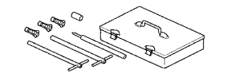
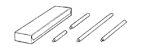

Alternator Assembly (2GR-FE) Preparation [Reassembly]
 | 09612-70100 | Power Steering Oil Seal Remover Set |
| (09612-07240) | Collar | |
 | 09820-63020 | Alternator Pulley Wrench Set |
 | 09950-60010 | Replacer Set |
| (09951-00470) | Replacer 47 | |
 | 09950-70010 | Handle Set |
| (09951-07100) | Handle 100 |
 | QL-200N | QL Torque Wrench (200N) Supplied by Banzai Ltd. and Iyasaka Co., Ltd. |
| QL-25N | QL Torque Wrench (25N) Supplied by Banzai Ltd. and Iyasaka Co., Ltd. |
 | SF3N | F-type Torque Wrench (3N·m) Supplied by Banzai Ltd. and Iyasaka Co., Ltd. |
| SF6N | F-type Torque Wrench (6N·m) Supplied by Banzai Ltd. and Iyasaka Co., Ltd. |